Building character, leadership, and lifelong friendships for boys in Trumbauersville, PA. Tohickon District.
Learn More ↓Troop 13 is a Scouts BSA troop for boys based in Trumbauersville, Pennsylvania, part of the Tohickon District within the Washington Crossing Council. Our scouts camp, hike, canoe, cook, serve their community, and grow into capable, confident young men.
We meet weekly at Scout Hall, generously supported by the Trumbauersville Lions Club. Our program is led by an award-winning team of adult volunteers — including a Silver Beaver recipient, multiple Tohickon Award honorees, and a Cub Scouter of the Year — who are deeply committed to every scout's development.
We're closely connected to Pack 13 in Trumbauersville, and many of our scouts cross over from the pack's Arrow of Light program.
From local trails to Florida's coast, Troop 13 scouts experience it all. Here's a look at the kinds of adventures our scouts get into throughout the year.
A full week at Goose Pond Scout Reservation — merit badges, sailing, climbing, shooting sports, the Camp Adventure Race, and the Polar Bear Plunge. We've won Top Shot and the fishing derby.
Sea Base in the Florida Keys for snorkeling and island camping. Backpacking on the Appalachian Trail. Canoeing 18 miles on the Susquehanna River. These are the trips scouts talk about for years.
Our legendary annual cooking competition. Scouts plan meals, shop on a budget, and compete in events from cracker barrel pinwheels to chili challenges to Dutch Oven dump cakes. A troop favorite.
Hickory Run State Park, Camp Trexler, Lake Nockamixon, Musser Scout Reservation, and more. We camp year-round and build real outdoor skills — fire building, knots, pioneering, orienteering.
Snow tubing at Shawnee Mountain and Bear Creek. Cabin camping at Camp Minsi in the Poconos. Walking on frozen Stillwater Lake. The Klondike Derby at Ockanickon Scout Reservation.
Tohickon Indoor Rally (we earned 1st place in fire building), Klondike Derby, fossil hunting at Beltzville Lake, orienteering hikes, and nature studies with guest instructors.
"Do a good turn daily." Service is at the heart of Troop 13. Our scouts regularly give back to the Trumbauersville community and beyond.
Annual spring cleanup, mulching, and planting at Trumbauersville's Veteran's Park to keep it beautiful for the community.
Every year, the troop stuffs eggs for the Trumbauersville Lions Club Easter Egg Hunt — and competes against their own time record.
Painting, maintaining, and improving Scout Hall — the troop's home base, provided by the Trumbauersville Lions Club.
Leaf clearing at North Penn Gun Club, mulching at Molasses Creek Park, and participating in the borough's seasonal cleanup events.
Donating food and supplies to the Veterans Food Pantry at Camp Trexler and the Quakertown Food Pantry.
Every Eagle Scout leads a major service project benefiting the community. Our scouts have built park benches, seed exchanges, shelves for food pantries, raptor cages, and more.
Eagle Scout is the highest rank in Scouting, earned by fewer than 6% of all scouts. Each Eagle candidate plans, organizes, and leads a community service project. Here are some of our most recent Eagles and their projects — Troop 13's Eagle legacy extends well beyond this list.
Whether your child is crossing over from Cub Scouts or is new to Scouting entirely, Troop 13 welcomes them. Come to a meeting, see what we're about, and discover why our scouts and families love this troop.
Boys ages 11–17, or who have completed the 5th grade and are at least 10 years old
Mondays at 7PM at Scout Hall, behind the Trumbauersville Fire Station
Visit our Facebook page or register online
Have questions about Troop 13? Thinking about joining? Want to learn more about Scouting for your child? We'd love to hear from you.
Mondays at 7PM at Scout Hall, behind the Trumbauersville Fire Station